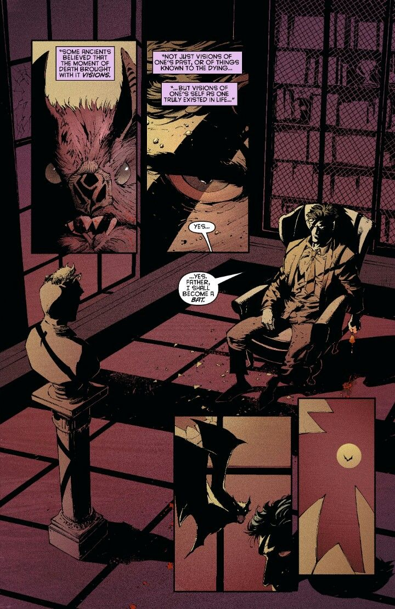

Wayne Records Archive
Long Halloween: 그는 어떻게 박쥐가 되었나
Classification: CONFIDENTIAL / Author: B. Wayne
이 이야기는 그동안 세상에 공개하지 않았던 지난 세월의 편린 중 하나다.
히어로와 빌런이라는 명확한 세력 구분마저 존재하지 않던 시절이 있었다.(독자들은 편의상 1970년대에서 80년대 정도를 생각해주길 바란다.) 고담은 혼란스러웠고, 고담 뿐만이 아니라 뉴욕과 시카고에도 유명 마피아 세력이 있었다. 미국-소련 간의 체제 경쟁은 절정에 치달았다. 물류와 건설은 자본주의 체제에서 가장 중요한 근간 사업이었다. 마피아들은 노동조합을 돈으로 매수하여 파업을 부추겼고, 기업은 이들에게 상납금을 내서 사업을 유지했다. 마피아들이 중간에서 좌지우지 하는 바로 그 힘은 단순히 부잣집에서 태어난다고 주어지는 권력이 아니었다. 1980년대 뉴욕이나 고담 등 대도시를 근거지로 삼은 마피아들은 도시 내 시멘트 및 콘크리트 공급을 거의 독점했다. 대부분의 화려하고 값진 건물들은 모두 마피아들이 건물주였다. 이들의 행위는 독점 공급이므로 명백한 자본주의의 헛점이었고, 개혁 대상이었으나, 법의 테두리 안에서는 아무 문제가 없는 경제 활동의 일부였다.
자본주의의 기본 원리는 '수요가 있는 곳에 공급이 따른다.'는 것이고, 마피아들은 이것을 사업으로 막대한 부를 쌓았다. 대표적으로 고리대금(사채업)과 도박, 마약 등이 그것이다. 특히 고담의 은행들은 비밀리에 마피아들의 자금을 세탁해주는 대가로 그들의 보호를 받았다. 마피아들은 이렇게 모인 돈을 합법적인 사업체의 자본으로 삼았다. 음식점, 나이트클럽, 쓰레기 수거 업체 등의 회사를 차려 운영했다. 그 뿐만 아니라 유통되는 막대한 현금은 정치인, 법조인, 공무원들의 뒷주머니로 들어가 그들을 사설 경호업체나 하수인 정도에 불과하게 만드는 방법들도 서슴치 않고 이용했다. 이렇게 형성된 카르텔은 의로운 경관 한두 명이나, 명망 높은 정치인이 좌지우지 할 수 있는 권력이 아니었다. 대도시들은 다들 이렇게 부패했고, 썩어갔다. 이것은 돈이라는 물질이 선보일 수 있는 가장 막강한 공포였다. 체제를 매개로 한 공포 앞에서 개개인은 무능하고, 허약하고, 현혹 되기 십상이었다.
그러나 모든 이들이 그들 앞에 무릎을 꿇고 머리를 조아린 것은 아니었다. 저명한 외과의사였던 토마스 웨인과, 교사이자 자원봉사자였던 마사 케인은 고담시의 서민들 사이에서 존경 받는 인물들이었다. 고담의 유명 마피아 보스인 '돈 칼마인 팔코네' 마저도 토마스 웨인의 수술을 받고 생명을 부지할 만큼 그는 생명 앞에서 경건했고, 의사로서의 맹세를 지키는 선량한 인물이었다. 토마스는 웨인 엔터프라이즈의 법인화를 성사 시켰으나, 상기한 현실의 암담함을 내다보고 회사를 상장하진 않았다. 비상장기업인 웨인 엔터프라이즈는 오직 웨인가문의 사람들만이 소유주로 남을 수 있었고 전문 경영인을 고용해 실무를 맡기는, 그 당시로서는 제법 독보적인 지배구조를 내세웠다. 혼돈이 가득하던 시절, 토마스의 예리한 판단 하나가 웨인 엔터프라이즈의 청렴한 이미지를 굳히는 데에 지대한 공헌을 한 것이다. 반면, 훗날 그의 아내가 되는 마사 케인은 토마스 웨인과 결혼 후 마사 웨인 재단을 세우고 고담시에 무상급식소와 보육원을 지었으며, 교사를 양성해서 공립학교에 취직하도록 도왔다. 뿐만 아니라 대학을 세우고 장학재단을 설립해 무일푼인 빈민 아이들이 성인이 될 때까지 평균 이상의 교육수준을 유지할 수 있도록 헌신한 여인이다. 그녀는 7080 고담 아이들에게 성모와 같은 사람이었다. 그런 두 사람 사이에서 외동아들이 태어났으니 그가 바로 고담의 황태자 '브루스 웨인'이다.
브루스는 태어나는 순간부터 언론의 집중조명을 받았다. 토마스 웨인과 마사 웨인이 결혼 이후로도 한동안 자식 소식이 없었기 때문이다. 지금과 달리, 과거에는 부부가 결혼을 하면 자식을 보는 것은 지극히 당연한 일이었다. 공사다망한 웨인 부부를 대신해 그들이 늦은 나이에 본 자식을 부모처럼 돌본 것은 웨인 가의 충직한 집사 알프레드였다. 브루스는 알프레드의 돌봄 아래에서 부족함 없는 유아기를 보냈다. 아이가 자라며 또 몇 년이 흘렀다. 웨인 부부와 웨인 엔터프라이즈의 활동으로 고담에는 처음으로 억제력이라는 것이 생겼다. 자본을 매수한 마피아들과 부패한 부르주아들이 유일하게 돈으로 사지 못한 것은 바로 인간에게 내재된 '도덕성'이었다. 이건 옳지 않다고 생각하면서도 행동할 용기는 없었던 소시민들이 웨인 부부의 활동을 보고 귀감을 받았다. 자발적으로 모여서 집회를 하고, 시위를 하고, 그 중에서도 명망 있는 이들이 선거에서 히든카드로 등장해 청렴한 부르주아들과 서민들의 표를 받아갔다. 자기 뒤를 봐줄 지역 정치인을 놓치기 시작한 마피아들은 안절부절 해지기 시작했다. 명망 있는 사람을 내세우지 못한 자들이 선택한 방법은 암살이었다. 미래가 촉망 받는 인재들의 싹을 잘라 자신들의 안위를 보전한 것이다.
생계형 범죄가 일상적으로 벌어지기 시작했다. 경찰력은 부족했고, 치안에 빈틈이 생기기 시작했다. 차가운 겨울바람이 문틈 사이로 불어올 때, 살을 에이는 것 같은 추위를 당신은 아는가? 결국 또 가장 먼저 위험에 노출되는 것은 빈민들이었다. 자신들이 살아남기 위해, 타인을 해쳐야만 하는 인간이라는 동물의 가장 원초적인 생존 본능은 도시의 근간을 뒤흔들고 있었다. 위협에 노출되는 건 돈이 많으면 피할 수 있는 가난과는 달랐다. 조 칠이라는 암살자가 있었다. 마피아들이 고용한 인물로 그는 제법 긴 시간 동안 노숙자로 변장한 채 웨인 부부의 뒤를 따라다니며 암살할 기회를 노린 기민한 남자였다. 변장에 늘 차이를 둔 탓에 웨인 부부는 같은 사람에게 적선하고 있는지도 모른 채, 길거리를 다닐 때마다 칠에게 자주 동전이나 지폐를 쥐어주었다. 좋은 취지에서 계속한 웨인 부부의 적선이 끝에 다다른 결말은 "우리 모두가 이미 알고 있다."
어린 브루스는 스스로의 운명을 비관했다. 가련한 어린 소년의 자아는 부모님이 모나키 극장 뒷골목 길바닥에서 죽어간 그 날, 부모님의 영혼과 함께 벼랑 끝으로 떨어졌다. 바닥이 보이지 않는 낭떠러지를 향해 소년은 발버둥 치지도 못하고 추락할 뿐이었다. 돌아온 집안에 남은 건 불을 지펴도 따뜻해지지 않는 벽난로와 소년의 잘못이 아니라고 다독여주는 늙은 집사 뿐이었다. 혼자가 된 소년의 빈 공간에는 범죄를 향한 맹목적인 분노와 살인에 대한 트라우마만이 가득했다. 학교에서도 소년은 더 이상 모두가 친해지고 싶어하는 왕자님이 아니라, 그저 부모 잃은 고아였다. 죽은 자는 말이 없었다. 누가 소년의 부모님에 대한 악담을 퍼트려도 소년은 집에 돌아와 그 사실을 확인할 길이 없었다. 단 하루도 괜찮았던 날이 없음에도 소년은 괜찮다는 거짓말을 해야 했고, 가식스러운 미소를 지어야만 했다. 그렇게 가면을 쓰고 소년은 십 년이 넘는 할로윈을 보내왔다. 소년은 이내 학교를 그만뒀다. 범죄투사로서 살아야만 한다는 운명론에 빠졌다. 자신이 가진 모든 것을 동원해서 소년은 십대 내내 세계를 유랑하며 무술을 배우고, 범죄수사에 대해 공부했다. 단 하루도 지칠 날이 없었다. 하루를 쉬면, 그 하루만큼 부모님에게 죄송했다. 몸이 고된 게 정신이 고된 것보다 나았다. 매일 밤 부모님의 환영을 소년은 봤다.
상징, 하나의 상징이 필요했다. 부모님이 살아생전 고담시를 위해 일군 것들을 이어가면서도 부모님과는 전혀 다른, 특별한 상징이 필요했다. 그러나 소년은 아직 어린 인간이었고 이제 막 신탁자금과 회사의 소유권을 물려받은 철부지 도련님에 불과할 뿐이었다. 소년은 이내 생각했다. 체제가 만든 공포를 제압할 유일한 수단은, 그 체제를 구성하는 인간으로부터 유발할 수 있는 아주 원초적인 공포였다. 빈 종이에 낙서를 휘갈기던 나날이 이어지던 어느 날, 소년은 꿈을 꿨다. 어린 시절 소꿉친구와 숨바꼭질을 하면서 물이 마른 우물에 숨으려다 우물 바닥으로 추락한 기억이었다. 타박상에 신음하던 소년은 어두운 우물 바닥 구멍 저편에서 들리는 기괴한 소리에 지레 겁을 먹었었다. 무언가가 날개짓을 하는 소리가 점점 커지더니 이내 한 무리의 박쥐떼가 튀어나와 소년을 휘감았다. 어린 시절부터 꿨던 이 악몽의 끝은 늘 박쥐떼가 튀어나와 소년을 덮치는 순간이었다. 난잡하게 어질러진 책상 앞에서 식은 땀과 함께 꿈을 깬 소년은 방 맞은 편 벽난로 위에 놓인 아버지의 석고 흉상을 바라봤다. 새하얀 흉상 위에 박쥐 한 마리가 날개를 접은 채 앉아 있었다. 그 순간 소년은 지난 일주일 간 자신이 풀지 못한 난제의 해답을 찾고 차분한 목소리로 읊조렸다.
"네, 아버지. 저는 박쥐가 되겠습니다."
